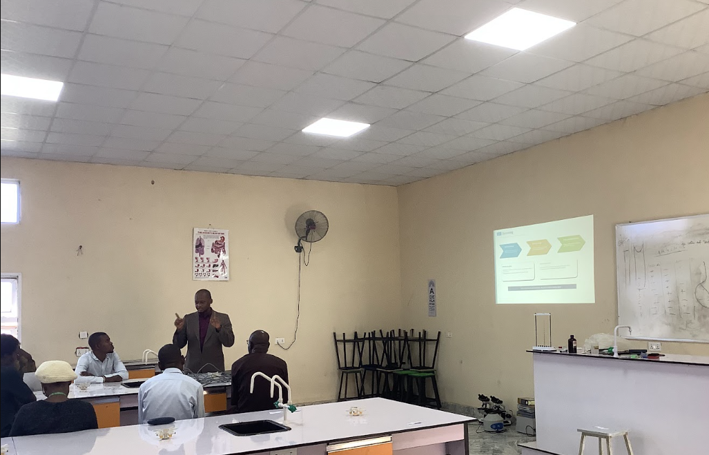
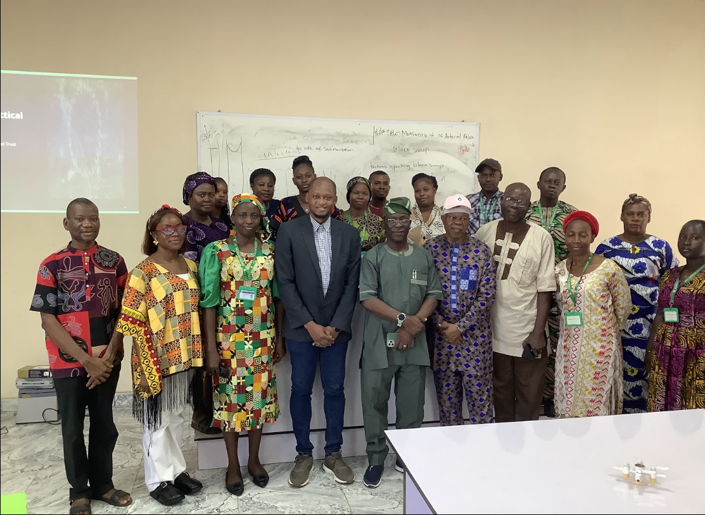

Twenty Six Days in Owo: Taking AI Driven Clinical Simulation to Nigeria
Fieldwork at Achievers University, Ondo State, supported by a Turing Scheme International Mobility Award through Bournemouth University.
Study Details
Bournemouth University Research Ethics Committee, ID 68822. Achievers University Health Research Ethics Committee, ID AUO/REC/2026/182.
Protocol, variant architecture and device selection documents pre-registered on the Open Science Framework: osf.io/vhwqz.
Fieldwork conducted 17 June to 10 July 2026.
Where I Started
I am a medical doctor. I trained at Usmanu Danfodiyo University in Sokoto, did my internship at the Federal Medical Centre in Katsina, and spent two years as a medical officer with the Kebbi State Ministry of Health before moving to the UK, and working in the NHS. I am now a PhD candidate at Bournemouth University, working on AI driven characters for extended reality clinical simulation.
That combination is the reason this trip happened. I have practised in Nigerian hospitals and I have practised in NHS hospitals, and I have a fairly unsentimental view of what separates them. A great deal of health technology is designed on the quiet assumption that the electricity stays on, the bandwidth holds, and the equipment budget exists. When those assumptions fail, the technology does not degrade gracefully. It simply stops.
So the question I wanted to put to the test was not whether AI driven simulation works. It was whether it works when the conditions are not ideal.
Why Go At All
I could have run this study in Bournemouth (I have run similar studies here). We have the headsets, the students, the ethics infrastructure and reliable internet. It would have been considerably easier.
But a study conducted entirely in a well resourced UK university tells you how a technology behaves in a well resourced UK university. If the argument is that AI driven simulation could widen access to high quality clinical training in settings where mannequin based simulation centres are scarce, then that argument has to be tested somewhere that actually resembles those settings. Otherwise it is a claim, not a finding.
There was also a simpler reason. Nigerian nursing students are some of the people who could benefit the most from such technology. It seemed reasonable to ask them what they made of it.
The Funding
The Turing Scheme is the UK government's programme for funding study and work placements abroad, run by the Department for Education. It replaced the UK's participation in Erasmus Plus, offering education providers the opportunity to apply for funding to support their students with study and work placements around the world. The scheme sits within the Department for Education's wider international education strategy, and providers are expected to show how placements support social mobility and expand international opportunities, particularly for students who might not otherwise get the chance to study or work abroad (GOV.UK guidance).
What I received was a Turing Scheme International Mobility Award through BU, covering a daily rate across the mobility period plus a contribution towards travel costs. Further detail on the scheme is available in the GOV.UK overview and at turingscheme.org.uk.
The application process was not difficult, but it was front loaded. Ethics approval in two countries, a data management plan, travel approval, a signed grant agreement and a partner institution willing to host all had to be in place before anything moved. The paperwork is not the interesting part of research, and it is the part that determines whether the interesting part happens at all.
Preparing
The heaviest preparation was technical rather than logistical.
The platform I took with me, XR3DQuest, is a simulation of an emergency anaphylaxis scenario in which AI driven clinical colleagues respond to what the learner does, with a physiological engine underneath and NEWS2 scoring throughout. In its usual form it makes live calls to a large language model at every turn. That works fine on a UK campus network.
For Nigeria, I built two additional delivery variants around the same simulation core: one that runs on the headset with no internet connection at all, serving dialogue from a library generated in advance, and one that runs on an ordinary Android smartphone. The three variants share the same clinical logic, the same physiology and the same scenario. Only the delivery changes.
Selecting the smartphone was itself a small piece of research. Rather than picking a device I liked, I built a multi criteria decision analysis with a technical sufficiency gate, weighted scoring across affordability, local availability, servicing and specification, and a pre-defined procurement rule for what to do if the top ranked device was out of stock. That document was locked and registered before I scored a single candidate. It is on the OSF alongside the protocol.
I flew out of the UK on 15 June and began at Achievers University on 17 June.
Settling In
I am Nigerian, so I did not arrive as a stranger to the country. I did arrive as a stranger to Ondo State. Nigeria is not one place, and a doctor who trained in the north west does not automatically know how things work in the south west. The language around me was Yoruba rather than Hausa. The food was different. The pace was different.
What struck me most was how quickly the Faculty of Basic Medical Sciences and the Faculty of Nursing Sciences made room for the work. Access to space, to students, to equipment and to people's time was arranged with a generosity that I had not entirely expected and did not take for granted. Research collaborations between UK and Nigerian institutions are often described in funding applications as partnerships and turn out in practice to be extractions. I was determined that this one would not be, and that required the host institution to be an active party rather than a venue.

The Work
The study ran as two independent parts, each a within-subject design in which every participant experienced both conditions in counterbalanced order and served as their own control.
The first part asked whether a headset simulation that serves AI dialogue from a library generated in advance holds up against one making live calls to the same underlying model. The second asked whether the same simulation delivered on an affordable Android smartphone holds up against delivery on a VR headset. Both parts used DASEX, the evaluation framework I developed and published in Artificial Intelligence in Medicine, as the primary measure, alongside the System Usability Scale, the NASA Task Load Index and open ended written feedback.
Across both parts, 106 undergraduate nursing students took part, each completing two full simulation sessions with questionnaires after each.
I am not reporting results here. Both analyses are written up and heading into peer review, and it would be poor practice to trail findings on a personal website before reviewers have seen them. The protocol, including the non-inferiority margin, the primary outcome definition and the missing data rules, was registered on the OSF before data collection began, so what was planned is a matter of public record and can be checked against whatever eventually appears in print.
What I can say without touching the findings is that the fieldwork itself was an education in the gap between a protocol and a room. Sessions run longer than planned. Headsets need charging. Connectivity behaves in ways that a written analysis plan cannot fully anticipate. I ran objective network measurements before online sessions precisely because I suspected the connectivity story would matter, and it turned out to be one of the more instructive parts of the whole exercise.
Teaching, Which Was Not in the Plan
Somewhere in the middle of the fieldwork it became clear that the most useful thing I could leave behind was not the simulation platform. It was method.
I delivered a workshop on how to conduct a systematic review, built around a worked example that would be familiar to a Nigerian audience rather than an abstract one: the evidence base for Hibiscus sabdariffa, known locally as zobo, in blood pressure management. Question framing, protocol registration, search strategy, independent screening, data extraction, synthesis and PRISMA reporting. I also gave a session on healthcare AI, covering where it is already embedded in clinical workflows and, more importantly, when clinicians should challenge it rather than defer to it.
These sessions were not part of the funded activity. They turned out to be among the most valuable things I did.

What Actually Changed
On research design. I came away more sceptical of any technology evaluation conducted only in the environment that produced the technology. If a system is claimed to be suitable for resource constrained settings, the burden of proof sits with the claimant, and it is not discharged by a study conducted somewhere comfortable.
On collaboration. The exchange ran in both directions, and I want to be specific rather than diplomatic about that. My colleagues at Achievers contributed clinical and educational expertise, a working understanding of how nursing education actually operates in Nigeria, and practical knowledge of the conditions under which any deployed system would have to survive. That is not local colour supporting a UK study. It is a substantive contribution without which the study would have been worse.
On my own assumptions. I had expected students with little or no prior VR exposure to find the headset intimidating. That is not what I observed. I had also expected that the participants most affected by connectivity problems would be the ones least able to articulate what was going wrong. That was not the case either. Both assumptions were mine, and both were condescending in a way I did not notice until they were disproved in front of me.
On being a clinician who does research. Twenty six days of running two simulation sessions per participant, back to back, is not glamorous work. But there is a version of this project that never leaves the lab and produces a perfectly publishable paper. I would not have believed that paper, and I am glad I do not have to.
For Anyone Considering This
Start the ethics process earlier than you think you need to. Two committees in two countries do not run on the same clock, and neither will hurry for you.
Build the offline capability before you leave. Do not plan to build it there. If your fallback depends on the internet, it is not a fallback.
Bring spares of anything that could end the day if it fails. Cables, batteries, power banks, a second device.
Ask your host institution what they want out of it, early and directly, and then actually deliver it. The workshops came out of that conversation.
And write things down as you go. I did not, consistently, and reconstructing the sequence of the first week afterwards was harder than it needed to be.
Thanks
To the UK Department for Education, whose Turing Scheme funding made the travel possible, and to the Bournemouth University Global Engagement team who administer it.
To Professor Frank Mojiminiyi and the Faculty of Basic Medical Sciences at Achievers University for hosting the collaboration, and to the Faculty of Nursing Sciences for making the study possible. And to the 106 students who gave up an hour or more of their time to put on a headset and take an unfamiliar piece of software seriously.
Photographs are my own.